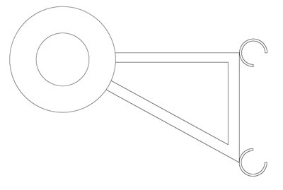

The first contraption we where thinking about seems to be a little fragile. The telescopic arm that is used to place the ramp in front of the wheel has to be able to hold the complete ramp including any electric motors that are needed to balance the ramp. Therefore I have put that idea in the icebox for so far.
The next plan is to transform the front tires into little caterpillar tire tracks looks more promising. We want to accomplish this by placing a smaller wheel in front of the front tire, and connect it with the front wheel by tire track.
The biggest advantage of this idea is that we don't need to add any motors or electronics. The power that is needed will mostly come from the front tires itself. Also should it be possible to make it an add on, so it can be attached as well as detached, making it portable. This will mean that there is no need for big changes on a basic wheelchair (with front wheel drive).
The biggest disadvantage is that the extra wheel will be taking up some space.

The first part of the construction will be a way to attach the extra wheel. by making a triangular structure it'll ensure some strength. Best would be if it could be attached to the chair on fixed positions.
At the end of the structure a wheel could be mounted.